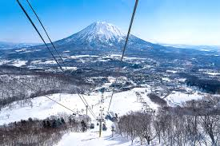
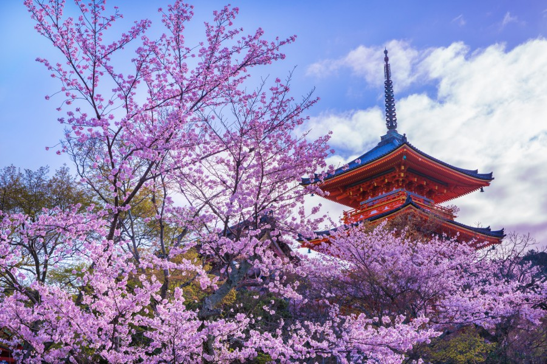
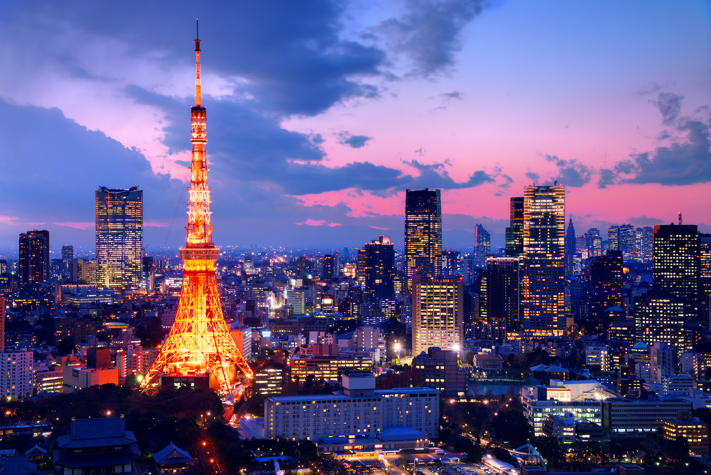
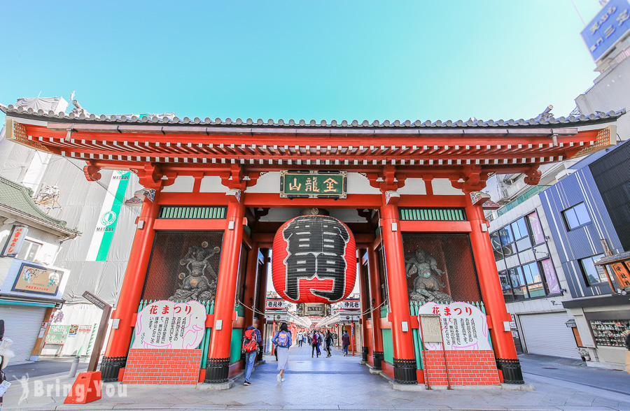
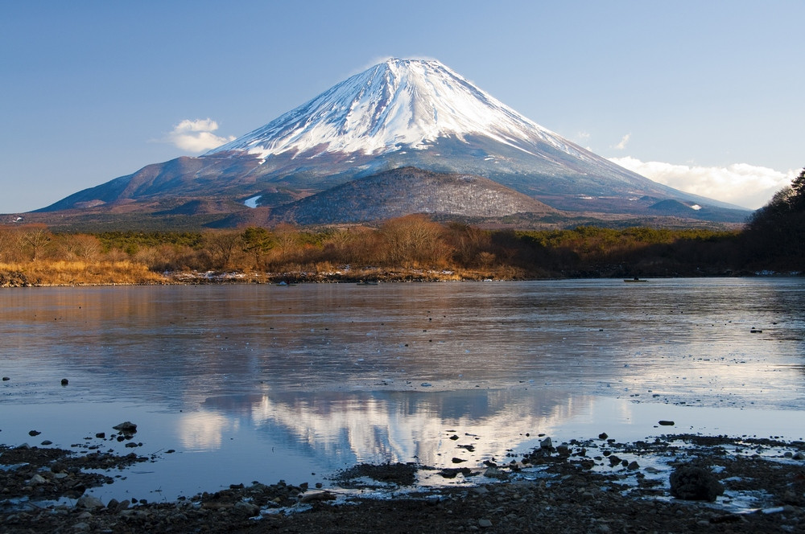
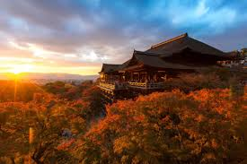

二世古位於日本北海道西部，是世界知名的滑雪度假勝地，以粉雪聞名於世。每到冬季，山坡覆蓋厚厚的雪層，吸引大量滑雪與單板愛好者前來挑戰各種雪道。除了滑雪，二世古還擁有溫泉、特色餐飲與度假飯店，讓遊客在運動之餘享受放鬆的休閒時光。夏季則提供登山、健行、騎行及泛舟等戶外活動，四季皆適合旅遊。二世古融合自然景觀、運動娛樂與國際化氛圍，是北海道極受歡迎的旅遊目的地。

每年春季，京都清水寺周邊櫻花盛開，形成絕美的粉色景致。寺內的清水舞台可俯瞰整個櫻花林，搭配古老木造建築，景色宛如畫卷。音羽瀑布及庭院也被櫻花點綴，增添浪漫與寧靜氛圍。遊客可沿小徑散步、拍照留念，感受春天的生機與京都傳統文化的結合。賞櫻期間，清水寺不僅是旅遊勝地，也是祈福與體驗日本春日美景的重要場所。

東京塔位於東京都港區，高達333公尺，是日本最具代表性的地標之一，建造靈感源自巴黎鐵塔。自1958年落成以來，它不僅象徵戰後日本的經濟復興，也成為東京現代都市景觀的重要象徵。塔內設有主展望台和特別展望台，遊客可以從高空俯瞰整個東京市區，尤其在夜晚燈光亮起時，都市夜景美不勝收。塔內還有多間餐廳、商店和小型博物館，提供遊客休憩與購物的便利。東京塔四季皆美，春天櫻花點綴城市、冬季夜景燈飾更添浪漫，是來東京旅遊不可錯過的景點之一。

淺草寺位於東京都台東區，是東京最古老且最具歷史文化價值的佛教寺廟，始建於公元628年。寺廟最著名的地標是雷門，其巨大的紅燈籠成為遊客必拍的景點。通往寺廟的仲見世街上，排列著各式傳統小吃與紀念品店，吸引無數遊客品嘗和購物。淺草寺不僅是一處宗教聖地，也承載著豐富的文化活動，如淺草三社祭和其他傳統節慶，呈現東京古老風貌與現代都市生活的結合。寺內香火鼎盛，遊客常來此祈求健康、平安與事業順利，體驗日本獨特的宗教文化與歷史氛圍。

富士山橫跨山梨縣與靜岡縣，是日本最高峰，標高3776公尺，也是世界知名的活火山與日本象徵。富士山四季景觀各異，春季櫻花盛開、夏季登山旺季、秋季紅葉繽紛、冬季白雪皚皚，吸引無數登山者與觀光客。山腳周邊的河口湖等地，提供絕佳視角欣賞富士山倒影，是攝影愛好者的天堂。作為文化象徵，富士山自古以來在文學、繪畫及宗教信仰中占有重要地位。2013年，富士山被列入世界文化遺產「富士山—信仰的對象與藝術的靈感來源」，展現其自然美景與文化價值兼具的地位。

清水寺位於京都東山區，創建於公元778年，是日本歷史悠久、極具代表性的佛教寺廟。寺內最著名的清水舞台以懸空木造建築聞名，站在舞台上可俯瞰整個京都市景，四季景色各有風情，春櫻、秋楓尤其迷人。寺內的音羽瀑布由三股水流組成，象徵健康、學業與戀愛運，是遊客祈福的重要場所。清水寺名稱意為「清水的寺」，取自寺內清澈流淌的泉水。作為世界文化遺產，清水寺不僅展現日本古建築之美，也保留了深厚的宗教與文化意涵，是遊客感受京都傳統與歷史氛圍的必訪之地。